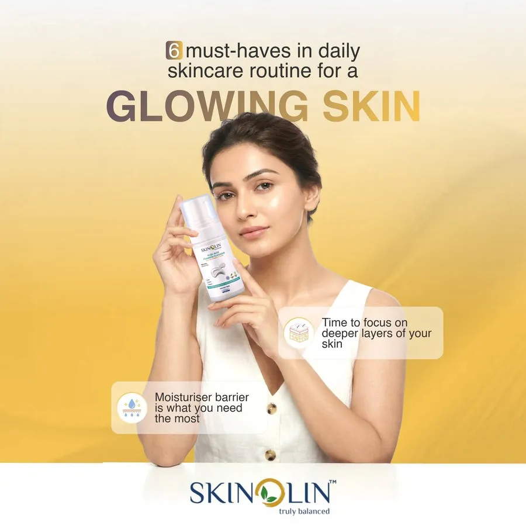

Daily Skin Care Routine for Glowing Skin: The 6 Steps That Work

If you want the short version: a daily skin care routine for glowing skin is six steps done in the right order, every day, for at least eight weeks. Cleanse, tone, treat with a serum, moisturize, protect with sunscreen, and then repeat until it becomes boring. There is no seventh secret step.
The long version matters too, because most people already own the right products and still see no glow. They apply them in the wrong order, use too much or too little, switch brands every three weeks, or undo the whole routine by skipping sunscreen. This guide walks through each step, what it is actually doing, how much to use, and the mistake that quietly cancels it out.
The daily skin care steps at a glance
This is the whole thing on one screen. Everything below is the reasoning behind it.
| Step | Morning | Night | How much |
|---|---|---|---|
| 1. Cleanser | Yes | Yes | A pea-sized amount, 30 to 40 seconds |
| 2. Toner | Yes | Yes | 3 to 4 presses, onto damp skin |
| 3. Serum | Yes | Yes | 3 to 4 drops |
| 4. Moisturizer | Yes | Yes | A coin-sized amount |
| 5. Sunscreen | Yes | No | Two finger lengths for face and neck |
| 6. Consistency | Every day, for 8 to 12 weeks before you judge it | Non-negotiable | |
If you only ever do three of these, do cleanser, moisturizer and sunscreen. That combination alone will out-perform an eleven-step routine used inconsistently.

What "glow" actually is
Glow is not a substance you add to skin. It is an optical effect. Skin looks radiant when its surface is smooth enough to reflect light in one direction rather than scattering it, when it is holding water so it sits plump rather than crepey, and when inflammation is low so the tone is even.
That is genuinely all it is, and it is why the routine below is built around the skin barrier rather than around brightening. A weak barrier loses water, the surface roughens, light scatters, and skin reads as dull no matter how much vitamin C you put on it. Fix the barrier and the glow arrives as a side effect. There is more on the biology in our guide to the science behind healthy skin.
Two practical consequences follow. First, if your skin stings when products go on, or feels tight ten minutes after washing, stop adding actives and repair first. Our routine for a damaged skin barrier covers that case. Second, dull skin is very often dehydrated skin, not dry skin, and those need different fixes.
Step 1. Cleanser
Cleansing is the most underrated step in any routine, and the one people most often get wrong in the direction of doing too much. Nothing you apply afterward works properly on a face still coated in sunscreen, sebum and the particulate matter that settles on skin during an Indian city commute.
What a good cleanser has to do is remove that layer without stripping the lipids that hold the barrier together. A formula that leaves your face squeaky is not cleaning better, it is dissolving the mortar between your skin cells. Tightness after washing is the signal that you have overshot.
How to do it
- Twice a day. Morning to remove overnight oil, night to remove the day.
- Lukewarm water, never hot. Hot water strips lipids on its own.
- Massage for 30 to 40 seconds. Most people manage about eight, which is not long enough for the surfactants to lift anything.
- Pat dry with a clean towel. Do not rub.
Choosing one
For normal, dry, combination or sensitive skin, a non-foaming or low-foam formula is the safer default. The Niacinamide Daily Cleanser is built for all skin types and adds niacinamide at the cleansing step, which is useful for tone.
If your skin is genuinely oily and you finish the day shiny by 2pm, a foaming cleanser earns its place. The Kojic Acid Foaming Cleanser is formulated for oily skin and pairs the cleanse with kojic acid for pigmentation. The full range sits in our cleansers collection.
The mistake that cancels this step: cleansing three or four times a day because your face gets oily. Oily skin that is stripped responds by producing more oil. Twice is the ceiling.
Step 2. Toner
Toners have a bad reputation in India, and it is deserved by the astringent, alcohol-heavy ones that were sold for decades to "close pores." Pores do not open and close. A modern hydrating toner does something else entirely: it puts a layer of water back onto skin immediately after cleansing, restores surface pH, and gives the serum behind it something to sink into.
This matters more here than in temperate climates. Between air conditioning, dry winter air in the north, and salt loss through sweat in coastal humidity, Indian skin swings between oily and dehydrated within the same week. A toner is the cheapest way to steady it.
How to do it
- Apply within 60 seconds of washing, while skin is still damp. Water on damp skin stays; water on dry skin evaporates and takes some of yours with it.
- Press it in with your palms rather than wiping with a cotton pad. Cotton absorbs most of the product and adds friction you do not need.
- Three to four presses is enough. Skin should feel dewy, not wet.
The Hydrating Toner Mist is a mist rather than a wipe-on, which suits the palm-press method, and it can be reapplied over makeup during the day. Other options are in the toners collection.
The mistake that cancels this step: using an alcohol-based astringent because your skin is oily. It gives you fifteen minutes of matte and hours of rebound oil.
Step 3. Serum
The serum is where visible change comes from. Cleanser, toner, moisturizer and sunscreen keep skin healthy and stop things getting worse. The serum is the step that actively moves the needle on dullness, uneven tone, dehydration or fine lines, because it carries a high concentration of one or two actives in a light base that gets them past the surface.
This is also the step where "which serum" genuinely depends on your skin, so pick by concern rather than by whichever one is trending.
| If your main concern is | Look for | Skinolin option |
|---|---|---|
| Dullness and uneven tone | Niacinamide | Niacinamide Glow Serum |
| Dehydration, tightness | Humectants, hyaluronic acid | Aquaglow Hydrating Serum |
| Redness, sensitivity | Chamomile, soothing botanicals | Chamomile Face Serum |
| Barrier repair, post-irritation | Centella asiatica (cica) | CICA Exosomes Face Serum |
| Early lines, loss of firmness | Niacinamide with peptides | B3 Lemongrass Anti-Aging Serum |
How to do it
- Three to four drops, onto skin still damp from toner.
- Tap and press it in. Rubbing drags the skin and wastes product on your fingers.
- Wait 30 seconds before the moisturizer so it is not diluted.
- One serum at a time until you know how your skin reacts. Two is manageable. Four is how people end up with a compromised barrier.
If dullness and uneven tone are your main concerns, the Niacinamide Brightening Duo pairs the Niacinamide Daily Cleanser with the Niacinamide Glow Serum at a lower price than buying them separately, and our guide to niacinamide benefits explains what to expect. The full range is in the serums collection.
The mistake that cancels this step: layering a new active every week. Give any serum a full eight weeks before deciding it does not work. Skin turnover takes about 28 days, so you need two to three complete cycles to judge anything.
Products in this guide


Step 4. Moisturizer
Every skin type needs a moisturizer, oily skin included. The serum delivers water and actives; the moisturizer is what stops them leaving. Without it, a hydrating serum on bare skin can actually accelerate water loss, because you have wetted the surface and given it nothing to seal under.
Oily skin does not need a heavy cream, it needs an occlusive light enough not to sit on top. Dry skin needs richer lipids. Both need something, every day, morning and night.
How to do it
- A coin-sized amount for the whole face, applied while the serum is still slightly tacky.
- Work outward and upward, and carry it down the neck. The neck ages faster than the face and gets a fraction of the product.
- At night, this is the last step. In the morning, sunscreen goes on top.
The All-in-1 Moisturiser with SPF 30 combines the moisturizer and a baseline SPF, which is a reasonable simplification for indoor days. On days you are outdoors, still use a dedicated sunscreen over it. More options are in the moisturizers collection.
The mistake that cancels this step: skipping it because your skin is oily. Dehydrated oily skin produces more oil, not less.
Step 5. Sunscreen
If you drop everything else, keep this one. UV is the single largest cause of pigmentation, uneven tone, collagen breakdown and the dullness that people try to fix with brightening products. In India, UV index stays high across most of the year, including in the monsoon and including through window glass.
Sunscreen is not the step that makes skin glow. It is the step that stops everything else being undone overnight. A brightening serum used without daily SPF is close to pointless: you are lightening pigment at one rate and generating it at another.
How to do it
- Two finger lengths for face and neck. Almost everyone applies less than the amount SPF is tested at, and protection falls away quickly when you do.
- Apply 15 to 20 minutes before going out, as the last step of your morning routine.
- Reapply every two hours on an outdoor day, and after sweating heavily.
- Cover the places people miss: ears, hairline, sides of the neck, and the tops of the hands.
- Wear it indoors too if you sit near a window. UVA passes through glass.
The Anhydrous Sunscreen SPF 50 PA++++ is a waterless formula, so it does not thin out on humid days, and the PA++++ rating covers UVA as well as the UVB that SPF measures. Both matter. See the sunscreens collection for alternatives, and our guide on how to choose and use sunscreen for the amount, the order and the reapplication rules.
The mistake that cancels this step: using the SPF in your makeup or moisturizer as your only protection. You will never apply enough foundation to reach the labeled SPF.
Step 6. Consistency
This is a real step, not a motivational closer. Skin renews on roughly a 28-day cycle. Any product you apply is working on cells that will not reach the surface for about four weeks. That is why the honest answer to "how long until I see a glow" is longer than most people want to hear.
| Timeframe | What actually changes |
|---|---|
| Days 1 to 7 | Hydration and comfort. Skin stops feeling tight. Makeup sits better. This is surface water, not repair. |
| Weeks 2 to 4 | Texture smooths. Redness settles faster. The first genuine change in how light reflects. |
| Weeks 4 to 8 | Tone starts to even out. Pigmentation begins to fade. This is where a brightening serum earns its keep. |
| Weeks 8 to 12 | Fine lines soften, oil production steadies, breakouts reduce in frequency. The result people mean by "glowing skin." |
Anything promising this in seven days is selling you a temporary surface effect, usually through occlusive shine or a light-scattering pigment. It washes off.
Morning versus night: what changes
The six steps stay the same, but their jobs are different. During the day skin is defending itself against UV, pollution and water loss. Overnight it repairs, and transepidermal water loss peaks, which is why night products can be richer.
- Morning: cleanser, toner, a protective serum such as niacinamide, moisturizer, sunscreen. Keep it light so everything layers under SPF without pilling.
- Night: cleanser (double cleanse if you wore sunscreen and makeup), toner, a repair serum such as cica or hydrating, and a richer moisturizer. No sunscreen.
We go through this split in more detail in morning versus night skincare.

The routine by skin type
The order never changes. What changes is the texture of what you use at each step.
Oily and acne-prone skin
Foaming cleanser twice daily, hydrating toner, a niacinamide serum, a gel or light lotion moisturizer, and a non-greasy sunscreen. Do not skip the moisturizer. The Oily Facial Kit puts the set together.
Dry and dehydrated skin
Non-foaming cleanser, toner pressed into damp skin, a hydrating serum, a richer moisturizer, SPF. If skin still feels tight, the issue is usually the cleanser rather than the moisturizer. See the Dry Skin Facial Kit.
Combination skin
Treat the T-zone and cheeks differently rather than compromising on both. A gentle all-type cleanser, and a lighter moisturizer on the T-zone with a richer one on the cheeks. Most people over-treat the oily third of their face and under-treat the rest.
Sensitive and reactive skin
Fewest steps, fewest actives. Gentle cleanser, soothing toner, one calming serum, a barrier moisturizer, mineral-friendly sunscreen. Cica is the ingredient worth knowing here. Introduce anything new one product at a time with a fortnight in between. The Sensitive Skin Facial Kit is built around that restraint.
Mature skin
The same five steps with an anti-aging serum at step 3 and a firm commitment to sunscreen, which does more for visible aging than any other product in the routine. See the Anti-Ageing Facial Kit.
If you would rather start with a matched set than assemble one, the professional kits collection and the Brightening Facial Kit are both built as complete routines.
Glowing skin tips: 10 habits that make a visible difference
The routine does most of the work. These habits decide whether it shows.
- Wear sunscreen every morning. It protects everything else you do.
- Cleanse twice a day, not more. Over-washing strips the barrier and makes skin duller, not cleaner.
- Apply toner, serum and moisturizer to damp skin. Water on damp skin stays in.
- Use one serum for one concern. Niacinamide is the best general choice for tone and texture.
- Sleep seven hours or more. Skin repairs overnight, and short sleep shows up as dullness within days.
- Eat enough protein, fruit and vegetables. Drinking water helps overall hydration, but it will not fix dry skin on its own, so keep moisturizing.
- Change your pillowcase weekly and keep your hands off your face.
- Exfoliate once or twice a week at most. More than that damages the barrier. If your skin is stinging, our skin barrier repair guide explains how to recover.
- Remove sunscreen and makeup at night with a gentle cleanser.
- Give every change eight weeks. Skin renews on a cycle of about 28 days, so results take two to three cycles to show.
How to glow skin naturally: what works and what does not
Searches for a natural or at-home glow routine usually turn up the same handful of kitchen remedies. Some are genuinely useful, several are actively harmful, and it is worth separating them.
Worth doing: drinking enough water across the day, sleeping seven hours or more, eating enough protein and vitamin C, washing pillowcases weekly, and keeping your hands off your face. None of these are marketing. Sleep and hydration change how skin looks within a week.
Not worth doing: lemon juice on skin, which is strongly acidic and photosensitizing; baking soda, which wrecks skin pH; toothpaste on spots; and daily scrubbing with sugar or walnut particles, which creates micro-tears. Most "instant glow" home remedies work by irritating skin into temporary flushing, which is redness, not radiance.
Natural ingredients absolutely have a place in a routine, but formulated and stability-tested rather than mixed in a bowl. We wrote about that distinction in why natural ingredients are the future of skincare.
Five habits that keep skin dull
- Switching products every few weeks. You never get past the four-week mark where results begin, so you conclude nothing works.
- Exfoliating more than twice a week. Over-exfoliation is the single most common cause of a compromised barrier, and it presents as dullness, stinging and rebound oiliness.
- Skipping sunscreen on cloudy or indoor days. UVA is roughly constant through the day and passes through cloud and glass.
- Applying products to bone-dry skin. Toner, serum and moisturizer all work better on damp skin. This one costs nothing to fix.
- Mixing incompatible actives. Strong acids, retinoids and vitamin C stacked on the same night will irritate most skin. Alternate nights instead.
Frequently asked questions
What should I apply on my face daily for glowing skin?
Five products, in this order: cleanser, hydrating toner, a serum matched to your concern, moisturizer, and sunscreen in the morning. That is the complete daily routine. Everything beyond it is optional, and exfoliation belongs once or twice a week rather than daily.
What are the skin care steps in order?
Thinnest to thickest: cleanser, toner, serum, moisturizer, sunscreen. Water-based products go before oil-based ones, because a moisturizer applied first forms a seal that a serum cannot get through.
How long does it take to get glowing skin?
Hydration improves in about a week. Texture in two to four weeks. Tone and pigmentation in eight to twelve weeks, because skin renews on a 28-day cycle and you need two to three full cycles before judging any product.
How can I get glowing skin naturally at home?
Partly. Sleep, hydration, diet and not touching your face genuinely affect how skin looks, and they cost nothing. But most kitchen remedies, lemon juice and baking soda in particular, damage the skin barrier and make dullness worse. Use formulated products for the actives and use lifestyle for the foundation.
Do I need a toner if I already use a serum?
It is the most skippable of the five steps, but it is doing real work: restoring pH after cleansing and leaving skin damp so the serum absorbs better. If you cut it, apply your serum within 60 seconds of washing, while skin is still wet.
Do I need sunscreen if I stay indoors?
Yes, if you sit near a window. UVB is largely blocked by glass but UVA is not, and UVA drives pigmentation and collagen loss. If you are in an interior room all day with no window, you can reasonably skip it.
Which serum is best for glowing skin?
Niacinamide is the best general answer, because it improves tone, regulates oil and supports the barrier at once, and it suits almost every skin type. If your dullness is from dehydration rather than pigmentation, a hydrating serum will do more.
What are the best glowing skin tips?
Wear sunscreen daily, cleanse gently twice a day, apply products to damp skin, use one serum for one concern, sleep at least seven hours and give every change eight weeks. Consistency does more than any single product.
Can I use the same routine in summer and winter?
The steps stay the same, the textures change. Lighter gel moisturizers and more frequent sunscreen reapplication in humid summer months, richer creams and an extra hydrating layer in dry winter air. Do not change your cleanser and serum every season.
Related reading
- How to choose and use sunscreen
- Niacinamide benefits and how to use it
- The complete guide to skin barrier repair
- Kojic acid uses, benefits and side effects
The short version
A daily skincare routine for glowing skin is not complicated and it is not fast. Cleanse gently twice a day, put water back with a toner, treat one concern with one serum, seal it with a moisturizer, and protect it with sunscreen every single morning. Then leave it alone for eight weeks.
Skinolin formulates for Indian skin and Indian weather, which means humidity, hard water, strong year-round UV and urban pollution rather than a temperate-climate assumption. If you want the whole routine in one box, start with a complete kit matched to your skin type. If you would rather build it step by step, start with the cleanser and the sunscreen and add from there.
Sources and further reading
Further reading from dermatology organizations and published research:
- American Academy of Dermatology: 10 skin care secrets for healthier-looking skin
- American Academy of Dermatology: Face washing 101
- American Academy of Dermatology: How to select a sunscreen
- Goh CL et al. Challenges and real-world solutions for adoption of holistic skincare routine (cleansing, treatment, moisturization, and photoprotection) in acne, rosacea, atopic dermatitis, and sensitive skin: An expert consensus. J Cosmet Dermatol, 2024 (PubMed)
Shop this routine